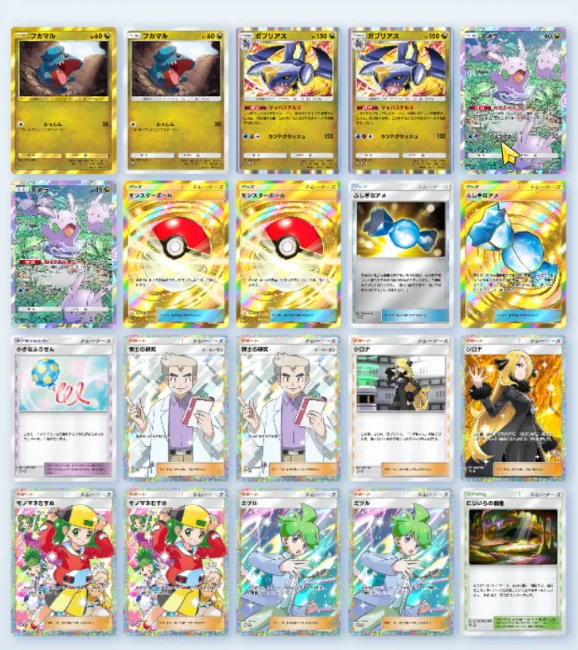

【ポケポケ】ガブリアス×ヌメラデッキ｜無敵ループの作り方と実戦4戦4勝の記録
結論：ガブリアスは「遅いから弱い」のではなく、遅さを埋める2枚を入れれば止まらなくなるデッキでした。ワザランドクラッシュ120にシロナの＋50を足すと170ダメージ。この170が環境のたねポケモンや2進化を一撃で落とせる圏内で、倒したら特性マッハステルスで次の相手の番はワザのダメージも効果も受けません。倒す→無敵→また倒す、が一方通行で続きます。立ち上がりの遅さはふしぎなアメ・ミツル・ヌメラで埋めました。実戦4戦は4勝0敗です。
「ガブリアスは2進化＋3エネで遅いから使えないと思っている」人。そして「無敵になるって聞いたけど、条件がよく分からない」で手が止まっている人。マッハステルスの発動条件と、そこに間に合わせるための構築を書きます。
2026年8月28日に、この構築でランダムマッチを4戦回した実プレイの記録です。抜粋なし・4試合とも丸ごと動画に入れてあります。カード名・ワザ名・特性の効果テキストはすべてゲーム画面と照合しました（にげる・きぜつ・たねのようにゲーム内でひらがな表記のものは、ひらがなのまま書いています）。
実戦4戦の結果（4勝0敗）
まず数字から出します。同じ日・同じ構築で4戦して4勝0敗。うち3戦は後攻スタート、1戦はレッドカードで手札を全部戻される事故を踏んだうえでの勝ちでした。
| 試合 | 相手 | 先攻/後攻 | 結果 | 内容 |
|---|---|---|---|---|
| 1試合目 | 草（ビークインex／フェローチェ／カミツルギ／ツボツボ） | 後攻 | 勝ち | ヌメラで相手のエネルギーを縛ったまま、170で毎ターン一撃。相手はほとんど殴れずに完封 |
| 2試合目 | ガブリアスミラー | 後攻 | 勝ち | お互い手札が止まる展開。ふしぎなアメを引いたのがこちらが先で、先に殴りきった |
| 3試合目 | 闘（メガルカリオex／カポエラー／ゴツゴツメット／レッドカード） | 後攻 | 勝ち | レッドカードで手札を全部戻されるが、引き直しでアメ・ガブリアス・ミツルが戻ってきて逆転。相手が降参 |
| 最終戦 | ガブリアスミラー | 先攻 | 勝ち | 今度は先攻。理想の回りで押し切り、相手が降参 |
このデッキはガブリアスが立った瞬間に勝負が決まります。相手からすると「倒しにいってもHP150で一撃では落ちない、放置すれば170で毎ターン1体持っていかれる、倒された返しは無敵で殴り返せない」という三重苦になります。1試合目と最終戦は、相手がほとんど何もできないまま終わりました。
デッキレシピ20枚
エネルギーは水＋闘の2種類です。exは1枚も入っていません。高レアリティを要求しないのがこの構築の良いところです。

▲ 実際のデッキ画面（2026年8月28日時点）
| カテゴリ | カード | 枚数 | 役割 |
|---|---|---|---|
| ポケモン (6枚) | ガブリアス | 2 | アタッカー。2進化・HP150。特性マッハステルス／ワザランドクラッシュ120（水・闘・無） |
| フカマル | 2 | ガブリアスのたね。HP60。ワザ「とっしん」30（自分にも10ダメージ） | |
| ヌメラ | 2 | 時間かせぎ。HP40。特性ねばるねんまくで相手のワザに無色エネルギー＋1 | |
| グッズ (5枚) | ふしぎなアメ | 2 | フカマルから1進化をとばして直接ガブリアスへ |
| モンスターボール | 2 | 山札からたねポケモンをランダムに1枚。フカマル・ヌメラどちらでも当たり | |
| 小さなふうせん | 1 | つけているたねポケモンのにげるためのエネルギーを1個ぶん軽く。ヌメラ用 | |
| サポート (8枚) | シロナ | 2 | この番、ガブリアスのワザのダメージを＋50。120→170にする1枚 |
| ミツル | 2 | エネルギーゾーンからエネルギーを1個出して2進化ポケモンに直接つける | |
| 博士の研究 | 2 | 山札を2枚引く | |
| モノマネむすめ | 2 | 手札を山札に戻し、相手の手札の枚数ぶん引く。事故ったときのリセット | |
| スタジアム (1枚) | にじいろの洞窟 | 1 | 自分の番に1回、エネルギーゾーンの発生エネルギーを引き直す。混色の事故対策 |
無敵ループの作り方｜マッハステルスの発動条件
このデッキの核はガブリアスの特性です。カードの文面はこうです。
このポケモンのワザのダメージで、相手のポケモンがきぜつしたなら、次の相手の番、このポケモンはワザのダメージや効果を受けない。
読み違えやすいのは「倒したなら」という条件が付いているところです。ただ殴っただけでは無敵になりません。倒しきった番の返しだけが無敵です。
だから流れはこうなります。
- シロナを使ってランドクラッシュ＝170ダメージで相手を倒す
- 次の相手の番、ガブリアスはワザのダメージも効果も受けない
- 返しの番でまたシロナ＋ランドクラッシュ＝また倒す
- 2に戻る
つまり「毎ターン確実に倒せるかどうか」がループの生命線です。倒しそこねた番だけ、相手に反撃されます。ここがシロナを2枚積む理由で、1枚だと引けない番に170へ届かず、ループが途切れます。
170ダメージが「一撃圏内」になる理由
ランドクラッシュは120。シロナは「この番、自分の『ガブリアス』が使うワザの、相手のバトルポケモンへのダメージを＋50する」なので、合計170です。
この170という数字が、今の環境でちょうど効きます。動画の1試合目がわかりやすい例でした。
- ビークインex（HP140）＋リーフマント（最大HP＋30）＝ちょうど170 → ぴったり落ちる
- ツボツボ（HP80）＋リーフマント30＝110 → 余裕で落ちる
- フェローチェ・カミツルギのようなたねアタッカー → 当然落ちる
相手がHPを盛ってきても、その盛った先が170のラインに収まってしまう。これがガブリアスの「揃えばとにかく強い」の正体です。
ヌメラは何をしているのか｜相手のワザに無色エネ＋1
ここを勘違いすると構築を間違えます。ヌメラは無敵ループを作っているカードではありません。ヌメラがやっているのは時間かせぎです。
このポケモンがバトル場にいるかぎり、相手のバトルポケモンの、ワザを使うためのエネルギーを、無色エネルギー1個ぶん多くする。
相手からすると、バトル場のポケモンに本来より1個多くエネルギーを置かないと殴れません。ポケポケは1ターンに1個しかエネルギーをつけられないので、これは実質「相手を1ターン遅らせる」効果です。
しかも厄介なのは、その1個はベンチの本命アタッカーに回すはずだったエネルギーだという点です。前に置いた繋ぎのポケモンにエネルギーを吸わせている間に、こちらは2進化を進められます。動画の1試合目では、相手はフェローチェに2エネルギーを置く余裕がないまま試合が終わりました。
ヌメラはたねポケモンなので、デッキを圧迫しないのも採用理由です。2枚入れても事故要因になりません。
正直な弱点：2進化＋3エネで立ち上がりが遅い
ここは隠さずに書きます。このデッキは遅いです。
- 2進化：フカマル→ガバイト→ガブリアス。ふしぎなアメを使っても、アメ＋ガブリアスの2枚が必要
- 3エネルギー：ランドクラッシュは水・闘・無色の3個。1ターン1個なので最短でも3ターンかかる
- 混色：水と闘の2種類を使うので、欲しくない色ばかり出るエネルギー事故が起きる
実際、動画の2試合目はデッキ残り7枚までふしぎなアメを引けないという展開になりました。相手も同じミラーで止まっていたので勝てましたが、噛み合っていたら負けていた試合です。
もうひとつの弱点が初手がヌメラ単騎になったとき。ヌメラのワザ「ぶつかる」は水・超が必要で、このデッキに超エネルギーは入っていません。つまりヌメラは基本的に殴れない壁です。相手を遅らせている間にこちらも殴れないので、フカマルを早く出せないと押し込まれます。
エネルギー事故を直す3枚｜アメ・ミツル・にじいろの洞窟
遅さを消すのではなく、遅さを埋めるのがこの3枚です。
ふしぎなアメ｜2進化ぶんの時間を1枚にする
手札の2進化ポケモンを選んで、場のたねポケモンにのせて1進化をとばして進化します。ガバイトを経由しないので、フカマルさえ置ければアメ1枚でガブリアスまで飛べます。2枚採用が最低ラインです。
ミツル｜2進化ポケモンにエネルギーを直接つける
エネルギーゾーンからエネルギーを1個出して、2進化ポケモンにつけるサポートです。ターンのエネルギー1個と合わせて1ターンで2個置けるので、3エネルギーに届くのが1ターン早くなります。
弱点は序盤に来ると完全に腐ること。2進化ポケモンが場にいないと使えないので、初手に2枚来ると相当きついです。それでも2枚にしているのは、欲しい番に引けないほうが痛いからです。
にじいろの洞窟｜混色の事故をその場で直す
おたがいのプレイヤーが自分の番に1回使えるスタジアムで、エネルギーゾーンから発生しているエネルギーをトラッシュして、次のエネルギーを出します。要するにエネルギーの引き直しです。
スタジアムは場に残り続けるので、1枚出しておけば毎ターン使えます。1枚採用で足ります。相手が別のスタジアムを出してきたときに上書きできるのも便利で、動画の1試合目では相手の「あまくかおる森」を壊すのにも使いました。
ガブリアスミラーは「先に殴ったもん勝ち」
4戦のうち2戦がミラーでした。結論は先にガブリアスを立てて先に倒したほうが勝つです。
理由はHPにあります。ガブリアスはHP150で、相手のランドクラッシュ120では一撃で落ちません。逆にこちらがシロナを使えば170で相手を落とせます。つまり先に倒せた側だけがマッハステルスで無敵になり、以降は一方通行になります。
ポケポケは後攻のほうが引ける枚数が多いので、ふしぎなアメを先に引ける確率が上がります。動画の2試合目は後攻からのミラーで、先にアメを引けたことがそのまま勝ちにつながりました。ガブリアスを前に置いてしまうと後出しになるので、立てるまではヌメラかフカマルを前に置いておくのが安全です。
ミツル2枚とガバイト、どっちを取る？
今いちばん迷っているのがここです。
| ミツル2枚（現行） | 1枚をガバイトに替える | |
|---|---|---|
| 進化事故 | アメを引けないと止まる | ガバイト経由で進化できる |
| エネルギー | 1ターンで2個置ける | 3個を自力で貯める必要がある |
| 序盤の手札 | 腐りやすい | ガバイトは場に出せるぶんマシ |
「3エネルギーを貯めている間にアメを引けるでしょ」という考え方ならミツル2枚のまま。「引けない番があるのが怖い」ならガバイトを1枚。実戦ではミツルで拾えた場面が複数あったので、いまはミツル2枚を続けています。
よくある質問
ガブリアスの無敵ループってどういう仕組み？
特性マッハステルスは「このポケモンのワザのダメージで相手のポケモンがきぜつしたなら、次の相手の番、このポケモンはワザのダメージや効果を受けない」というものです。倒せた番の返しだけが無敵になります。シロナ込みの170で確実に倒し、返しは無敵、また倒す——これがループです。倒しそこねた番だけ殴られます。
シロナは何枚入れるべき？
2枚をおすすめします。1枚だと欲しい番に引けず、170に届かないターンが出てループが途切れます。ガブリアスで2回連続して倒すには、実質シロナ2回ぶんが必要になる場面があります。
ヌメラは本当に必要？
必要です。ただし役割は無敵ではなく時間かせぎ。特性ねばるねんまくで相手のワザに無色エネルギーが1個ぶん余分に必要になるので、相手は本命のアタッカーにエネルギーを回せなくなります。たねポケモンなのでデッキも圧迫しません。
ガブリアスは2進化＋3エネで遅いから弱いのでは？
遅いのは事実です。この構築ではふしぎなアメで1進化をとばし、ミツルでエネルギーを1個直接つけ、ヌメラで相手も遅くすることで間に合わせています。遅さを消すのではなく、相手も遅くして相対的に間に合わせる考え方です。
にじいろの洞窟は1枚で足りる？
足ります。スタジアムは場に残り続けるので、1枚出せば毎ターンエネルギーを引き直せます。相手のスタジアムを上書きできるのも利点です。
ミツルとガバイト、どっちを入れる？
現行はミツル2枚です。ガバイトは進化事故を減らせますが、3エネルギーを自力で貯める時間が増えます。ミツルなら2進化ポケモンに直接エネルギーを置けるので、立った番からすぐ動けます。序盤に腐るのが気になるなら1枚をガバイトに替える形もありです。
ガブリアスミラーはどうやって勝つ？
先に立てて先に倒す。ガブリアスはHP150で相手の120では一撃で落ちないので、先に倒せた側だけが無敵になります。立てるまではガブリアスを前に置かず、ヌメラかフカマルを壁にしておくのが安全です。
小さなふうせんは何のために入っている？
壁にしたヌメラからガブリアスへ交代し直すためです。つけているたねポケモンのにげるためのエネルギーを1個ぶん軽くします。ヌメラはたねポケモンなので条件を満たします。
まとめ
- 無敵ループの正体はガブリアスの特性マッハステルス。条件は「自分のワザで倒したこと」
- 倒しきる火力はランドクラッシュ120＋シロナ50＝170。だからシロナは2枚
- 170はビークインex＋リーフマント＝ちょうど170のように環境のHPラインに刺さる
- ヌメラは無敵の理由ではなく時間かせぎ。相手のワザに無色エネ＋1で1ターン遅らせる
- 弱点は2進化＋3エネ（水闘の混色）の立ち上がりの遅さ。アメ・ミツル・にじいろの洞窟で埋める
- ミラーは先に立てて先に倒したほうが勝ち。立つまでガブリアスを前に置かない
- exが1枚も要らないので組みやすい
実戦4戦は動画にまとめてあります。レッドカードで手札を全部戻された3試合目もそのまま入れてありますので、「事故ったあとどう拾うか」も含めて見てみてください。
「ミツルを抜いてガバイトを入れたほうがいい」「ここはこう回すべき」というのがあれば、ぜひコメントで教えてください。次の調整に反映します。